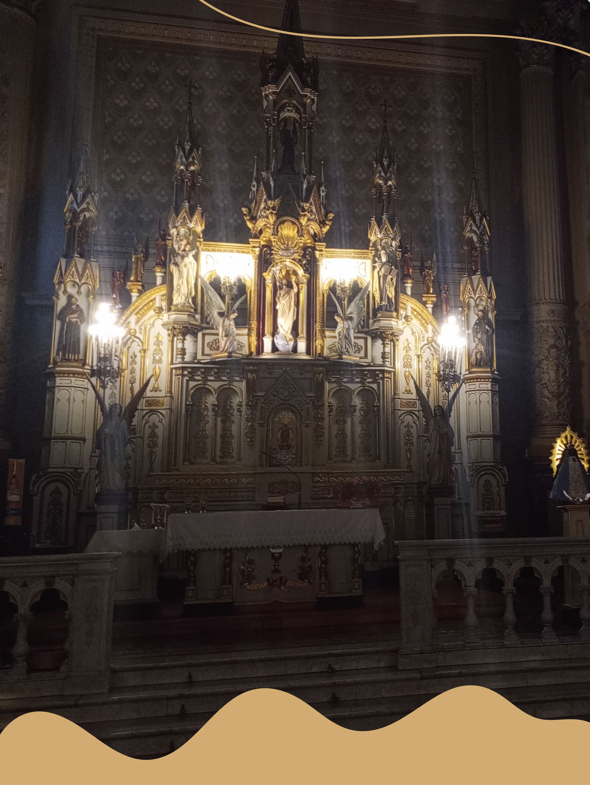

Convivencia 3°B
Por Lara Grah y Josefina Cerda de 3°B
Tercer año "B" vivió una jornada de reflexión y compañerismo en el Santuario Jesús Sacramentado. El Santuario es muy bello, uno de los más lindos de la ciudad. Fue fundado por una monja cuyos restos habitan allí, y en la actualidad viven otras monjas.
Luego de conocer la historia, desayunaron juntos y realizaron actividades al aire libre en grupos formados al azar. El primer juego consistía en crear una figura entre 4 o 5 personas, y el grupo que mejor lo lograba o mostraba la mejor técnica ganaba.
El segundo juego implicaba colocar una lona en el piso con todos los integrantes del grupo encima, y sin tocar el suelo, debíamos darle la vuelta. Tras este juego, nos sentamos en ronda en unas sillas, y la profesora nos fue entregando unas cintas de colores. En un lado de la cinta, debíamos escribir las cosas positivas que podríamos aportar para mejorar la convivencia en nuestro grupo, y en el otro lado, las cosas que deberíamos dejar de hacer.
También tuvimos momentos libres, durante los cuales la mayoría de los chicos jugaban al fútbol, otros jugaban al truco, comían o charlaban.